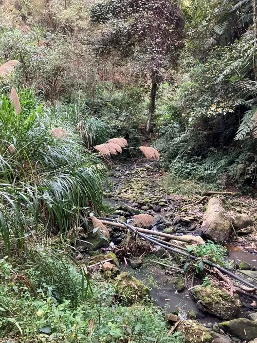
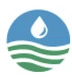
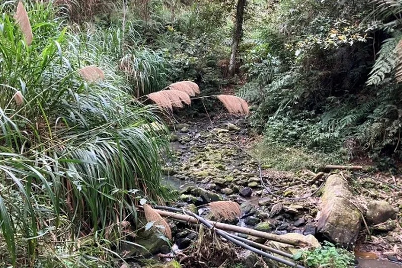
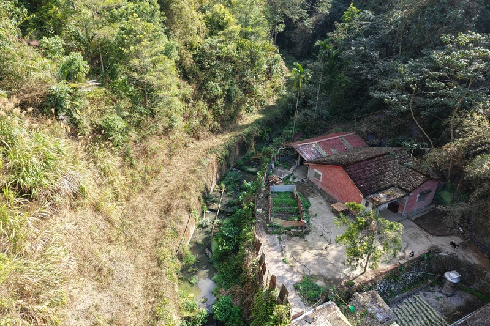

流域守護實踐
從日常巡檢到自主防災
守護行動將專業水利知識轉化為貼近生活的日常實踐。
透過志工培訓、防汛演練與水文化推廣，讓全民共同參與流域環境的長久守護，形成堅韌的安全防護網。

在水利治理與流域維護的日常中，有一群默默付出的巡守志工與在地社區夥伴，穿梭在河灘、防汛道路與堤防邊。
這是一篇守護行動誌的範例文章，展示如何記錄這群守護者的堅定足跡，以及人與河川共同生活的溫暖故事。

從現場觀察與日常巡查出發，守護行動誌匯聚了來自大甲溪、大安溪與烏溪流域的守護者力量。無論是定期監測水質、防汛安全整備，或是村里動員守護生活周邊的河道溝渠，每一份微小而持續的行動，都在串聯起更具韌性的流域家園。
河川巡守隊是守護流域水環境不可或缺的重要支柱。志工夥伴們定期沿著水岸步道、防汛道路與河川灘地展開巡護，運用簡易水質檢測包記錄溶氧量與透明度，並隨時留意河道有無雜物堆積或異常排放。
在颱風或強降雨季節來臨前，巡守隊更配合防汛整備工作，巡視閘門啟閉與水流順暢度，協助第一時間通報水利分署，守護沿岸居民的生命財產安全。

守護行動的根基在於社區。村里幹部與在地居民長年生活在水岸周邊，對於河川的水情變化、季節漲退有著深刻的身體經驗與在地智慧。
透過水利署推動的自主防災社區培力與志工動員，地方居民自發組織應變巡查組，不僅在日常維護周邊親水步道整潔，更透過世代傳承，讓下一代從小體會人水共生、珍愛家園的深刻意涵。

守護行動將專業水利知識轉化為貼近生活的日常實踐。
透過志工培訓、防汛演練與水文化推廣，讓全民共同參與流域環境的長久守護，形成堅韌的安全防護網。
第三河川分署攜手地方夥伴建立即時通報與定期回饋機制，讓守護者的聲音被聽見、行動被看見。守護一條河，不只是為了防止水患，更是為了讓生活在水畔的每一個人，都能享有安全、舒適且充滿生機的生活環境。
本篇範例文章呈現了守護行動誌的編撰架構，期待未來持續收錄更多感人真摯的守護故事，凝聚全民守護三川流域的共同信念。
每一趟巡檢的足跡，都在為未來的河川寫下平安的篇章。